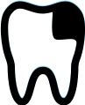
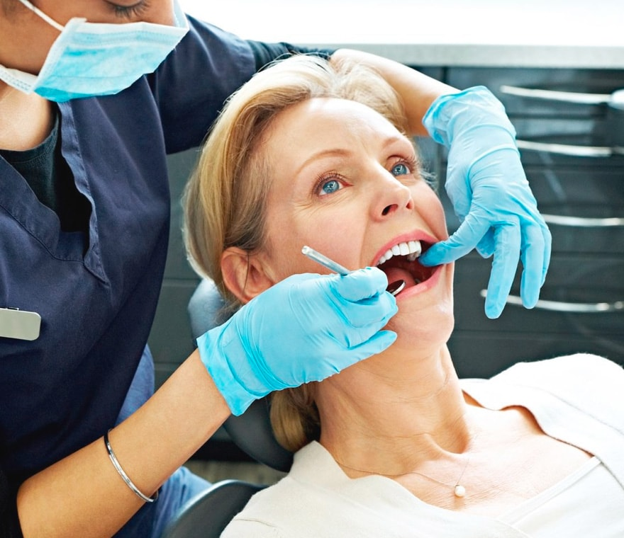
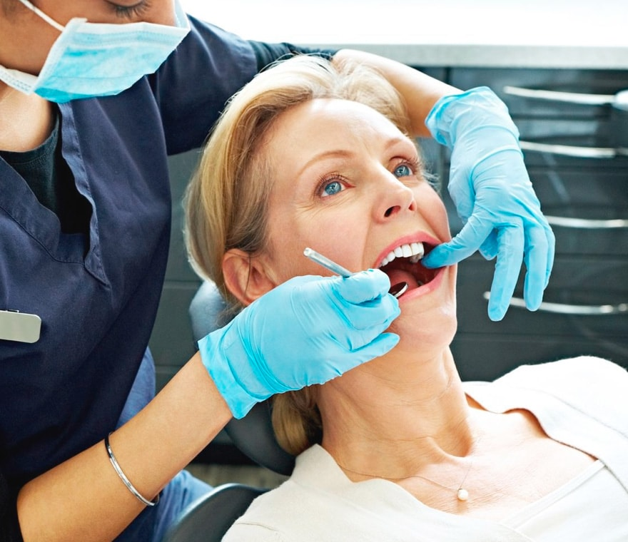
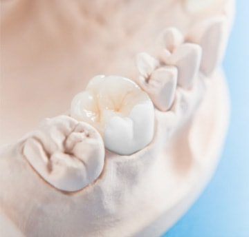
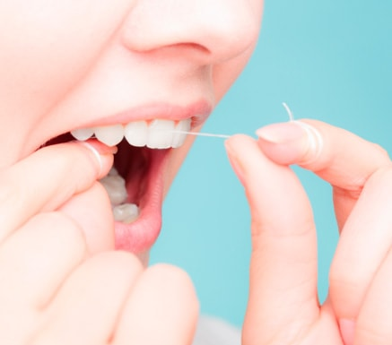

8 (495) 713-91-96
8 (499) 226-59-99
Керамические реставрации для идеальной улыбки
Замечали, как со временем любая пломба теряет свою
привлекательность и желтеет? О красивой и открытой улыбке в такой ситуации остается только мечтать. Но в стоматологии «Мигона» вы можете забыть об этой проблеме раз и навсегда.


Симонян Айк Гургенович
Стоматолог терапевт-ортопед
Я, как врач ортопед клиники, хочу, чтобы вы чувствовали себя комфортно в любой ситуации и не скрывали свою улыбку. Обращайтесь ко мне за надежной помощью, и я верну вашим зубам безупречный вид с помощью виниров, а их функциональность и целостность с помощью вкладок. Давайте вместе воплощать ваши желания.
Виниры
Это тонкие пластинки из керамики от 0,2 мм. Они скрывают недостатки в зоне улыбки, поэтому фиксируются на лицевую часть зубов. Миниатюрные виниры станут натуральным продолжением ваших передних зубов. Вы быстро к ним привыкните.
Существует несколько видов виниров – керамические и композитные. Они успешно борются с дефектами передних зубов, но первые все же выигрывают благодаря «благородности» материала.

Почему керамика идеально
подходит для виниров?

Светопроницаемость
Обладает светопроницаемостью
Стойкость цвета
Не изменяет первоначальный цвет через время

Гипоалергенность
Подходит всем, так как не вызывает аллергической реакции
Защищенность
На поверхности реставрации не скапливается налет
Симонян Айк Гургенович
Стоматолог терапевт-ортопед
Почему я с уверенностью могу сказать, что виниры прослужат долго? Весь секрет в самом материале. В нашей стоматологии мы используем усиленную под прессом керамику Е.mах от ведущего производителя Ivoclar Vivadent (Лихтенштейн)
Реставрации из цельных заготовок крепкого материала получаются особо износостойкими. К тому же, керамика обладает палитрой натуральных оттенков. Я подберу самый подходящий. Вы удивитесь сходству новых зубов с родными!
Найдите свою проблему, а я решу ее с помощью виниров:
Сколы и трещины

Короткие зубы

Темные пломбы
Пигментированное окрашивание
Межзубные промежутки

Небольшая скученность
Керамические пластинки скроют несовершенные цвет или форму зубов, а также избавят от небольших ортодонтических проблем. Универсальная помощь для вашей совершенной улыбки!
Установка виниров проходит после небольшого препарирования эмали, чтобы зубы не выглядели крупными, а просто незаметно преобразились.
Уже готовы поставить виниры на передние зубы, и вас интересует цена? Узнайте стоимость в нашем прайсе на сайте или приходите ко мне на консультацию за подробной информацией.
Честная цена
Установка одного винираот 17 000 р.
Винир керамический 2 шт.40 000 р.
Изготовление диагностической модели600 p.
Установка двух винировот 40 600 р.
Винир керамический 2 шт.40 000 р.
Изготовление диагностической модели600 p.

 
 
Мы создадим для вас вкладку, повторяющую недостающую часть зуба. С максимально точными размерами и анатомическими особенностями. Реставрация вернет вашему зубу прежнюю функциональность!
Вкладки
Когда речь идет о долговечном восстановлении жевательных зубов, я с радостью предлагаю керамические вкладки на зубы. Это выгодная альтернатива простым пломбам! Узнайте цену в нашем прайсе..
Вкладка незаменима в таких случаях:
- Если отсутствует ползуба
- После удаления старой пломбы
- После лечения осложнений кариеса
Применение вкладки при восстановлении большей части зуба надежнее пломбы, которой сложно выдерживать жевательные нагрузки.
Почему вкладка надежнее пломбы?

Cтойкость цвета
Керамическая реставрация навсегда сохраняет первоначальный цвет. Простая пломба же через время теряет естественный оттенок
Срок службы
Вкладка служит более 10 лет. Пломбу следует заменить максимум через 2-3 года

Прочность
Керамика не поддается стиранию под действием нагрузки. А пломбировочный материал «проседает»
Плотность
Вкладка плотно прилегает к зубу по точным параметрам. Пломба может отколоться от зуба, провоцируя развитие кариеса
Керамическая реставрация – это способ восстановления зубов, которому доверяю не только я, но и все мои довольные пациенты.
Он дарит зубу вторую жизнь для вашего комфорта! Вкладка устанавливается в тщательно очищенную полость зуба – с плотной фиксацией к твердым тканям, без зазоров.
Стоимость вкладки на зуб смотрите ниже, в нашем прайсе.
Рекомендации после установки виниров и вкладок:
- Чистить зубы дома 2 раза в день
- 2 раза в год проходить профессиональную гигиену полости рта
- Ограничить потребление жестких продуктов

Честная цена
Установка вкладкиот 17 000 р.
Винир керамический 2 шт.40 000 р.
Изготовление диагностической модели600 p.
Непривлекательная улыбка или сильное разрушение зуба? Дефекты, которые тревожили вас долгое время, навсегда останутся в прошлом. Всю заботу по их устранению я беру на себя, а вы просто запишитесь на прием в стоматологию «Мигона»!